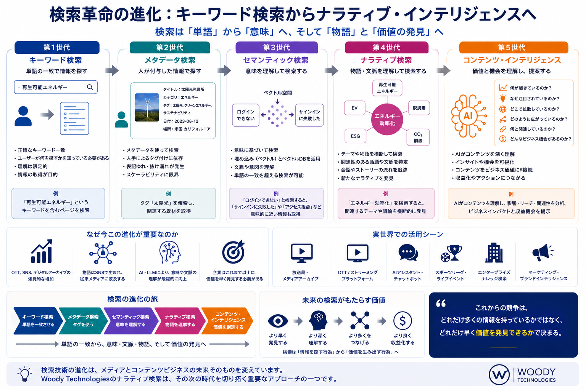
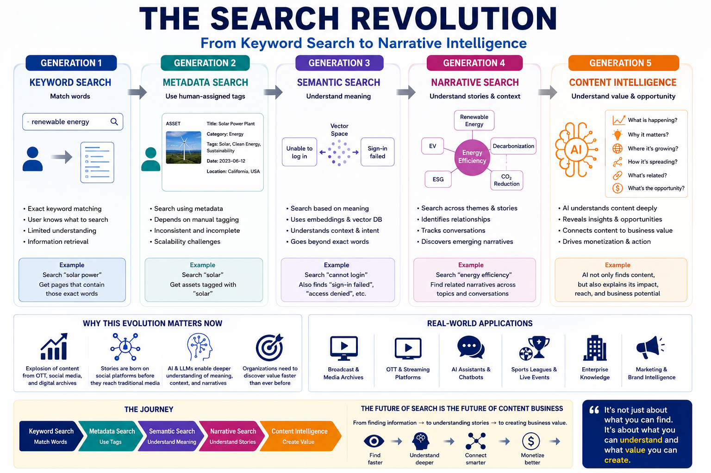

WEB MAGAZINE — VOL.4
検索 / AI / メディアテック / コンテンツ戦略
Search / AI / MediaTech / Content Strategy
検索革命はどこへ向かうのか？
Where Is the Search Revolution Heading?
Keyword SearchからNarrative Intelligenceへ
From Keyword Search to Narrative Intelligence
Search
AI / LLM
MediaTech
MAM / OTT
2026
私たちは日々検索を利用している。しかし、検索技術そのものは大きな転換点を迎えている。これまでの進化を振り返ると、その流れは非常に興味深いものだ。
We use search every day. But search technology itself is at a major turning point. Looking back at its evolution, the trajectory is remarkably compelling.
→
第2世代
Metadata
Gen.2
Metadata
→
第3世代
Semantic
Gen.3
Semantic
→
第4世代
Narrative
Gen.4
Narrative
→
第5世代
Intelligence
Gen.5
Intelligence
Overview — 検索の進化：第1世代から第5世代へ


Googleに代表される従来型検索。入力したキーワードと一致する情報を探す仕組みだ。「何を探すか」を人間が知っていることが前提だった。
The classic search model, typified by Google. It finds information matching the keywords you type. The premise was that humans already knew what they were looking for.
- 正確なキーワード一致が必要
- ユーザーが何を探すかを知っている必要がある
- 理解は限定的、情報の取得が目的
- Requires exact keyword matching
- Users must already know what they're looking for
- Limited understanding — retrieval is the goal
放送局や企業のMAM（※1）で利用されてきた検索だ。タイトル、タグ、説明文など、人間が付与したメタデータを利用してコンテンツを探す。しかしコンテンツ量が爆発的に増加する中で、手作業によるメタデータ管理は限界を迎えている。
The search model used in broadcaster and enterprise MAM (※1) systems. Content is found through human-assigned metadata — titles, tags, descriptions. But as content volumes explode, manual metadata management is hitting its limits.
近年のLLMやRAGで利用される技術だ。検索対象をベクトル化し、単語ではなく意味で検索する。「ログインできない」と「サインインに失敗する」は異なる言葉だが、同じ意味として理解できるようになる。
The technology behind modern LLMs and RAG systems. Content is vectorized and searched by meaning, not by words. "Can't log in" and "sign-in failed" are different phrases — but now understood as the same intent.
Point
検索は「単語」から「意味」の理解へ進化した。しかし、ここで終わりではない。
Search evolved from words to meaning. But this is not the end of the story.
Narrative Searchは単語や意味だけでなく、「物語」や「文脈」を検索対象にする。「エネルギー効率化」というテーマを検索すると、再生可能エネルギー・EV・脱炭素・ESG・CO₂削減など、関連する議論やコンテンツを横断的に発見できる。検索対象は単語ではなく、社会で形成されるストーリーそのものだ。
Narrative Search goes beyond words and meaning to target "stories" and "context." Search "energy efficiency" and you discover renewable energy, EV, decarbonization, ESG, CO₂ reduction — the full constellation of related discussions. The search target is not a word but a story forming in society.
Key
ニュースやスポーツの物語は放送局ではなく、SNS上で形成され始めている。だからこそNarrative Searchが重要になる。
The narratives around news and sport are no longer forming inside broadcasters — they're forming on social media. That's why Narrative Search matters.
コンテンツを検索するだけではない。AIが以下を理解し、提案する世界だ。
This goes beyond search. AI understands and proposes:
- 何が起きているのか
- なぜ注目されているのか
- どの地域で拡散しているのか
- どのコンテンツと関連しているのか
- どのように収益化できるのか
- What is happening
- Why it's attracting attention
- Where it's spreading geographically
- What content is related
- How it can be monetized
Key
放送局、OTT（※2）事業者、スポーツリーグ、コンテンツオーナーにとって、本当に重要なのは検索速度ではない。コンテンツの価値をどれだけ早く発見できるかだ。
For broadcasters, OTT (※2) operators, sports leagues, and content owners, what matters is not search speed. It's how quickly you can discover the value in your content.
「検索の進化は、コンテンツビジネスそのものの進化を示している。」
"The evolution of search reflects the evolution of the content business itself."
Keyword SearchからSemantic Searchへ。Semantic SearchからNarrative Searchへ。そしてNarrative IntelligenceからContent Intelligenceへ。検索の進化は、単なる情報探索の進化ではなく、コンテンツビジネスそのものの進化を示しているのかもしれない。
From Keyword Search to Semantic Search. From Semantic Search to Narrative Search. From Narrative Intelligence to Content Intelligence. The evolution of search may reflect not just how we find information — but the evolution of the content business itself.
用語解説 / Glossary
※1 MAM（Media Asset Management） — 映像・音声などのメディアコンテンツを管理するシステム。放送局や制作会社で広く利用されており、素材の保管・検索・配信を担う。
※1 MAM (Media Asset Management) — A system for managing media content including video and audio. Widely used in broadcasters and production companies for storing, searching, and distributing assets.
※2 OTT（Over The Top） — インターネット回線を通じて映像コンテンツを配信するサービス。Netflix、Amazon Prime Video、ABEMAなどが代表例。
※2 OTT (Over The Top) — Video content delivery services over the internet. Netflix, Amazon Prime Video, and ABEMA are representative examples.
Tags
#AI #MediaTech #MAM #OTT #Broadcast #ContentManagement #SemanticSearch #NarrativeSearch #ContentIntelligence #DigitalTransformation #SearchEvolution #LLM #RAG #放送 #メディアテック #コンテンツ戦略
Liner Notes Consulting — Web Magazine Vol.4 — 2026